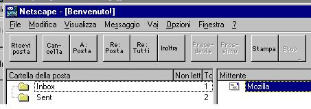
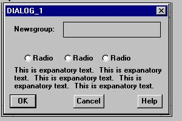
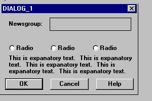
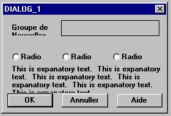

|
Localizability Guidelines: ExamplesGuideline 3: No bit mapped text in Graphics.

"Not enough memory to open this file.", "Not enough memory to view this image." and "Not enough memory to play this sound." A clever programmer might be tempted to save space by genericizing and paramterizing these messages:
char szCommand1[] = "open"; char szCommand2[] = "view" ; char szCommand3[] = "play"; char szObject1[] = " this file"; char szObject2[] = " this image"; char szObject3[] = " this sound"; The final message could then be constructed at run-time based on what action the user was trying to perform, with code like this: char szFinalString[cbMaxSz] = CleverConcat(szString1,szCommand1,szObject1, ".") There are several problems with this approach from a localization standpoint: a) Translators may have a hard time choosing the right words from this fragmented approach (is "view" a noun or a verb? Does the target language use the same word to play sounds and movies?) b) The word order of the sentence may change from language to language (for example, in Japanese, the verb always comes at the end of the sentence). Using the CleverConcat() function would require changing and recompiling the code for such languages. c) In many languages other than English, words have many forms, including masculine, feminine, neuter, etc., based on sometimes complex rules. It may turn out to be impossible to correctly localize such a concatenated string in all possible combinations, creating an ugly and unsolvable bug. d) Note the hard coded period. This would create a minor but real bug in Japanese and other languages that do not use English punctutation marks. The solution to this problem is simply to create complete, grammatically correct sentences, stored in externalized message resource files.
 Every control on this example is wide enough only for the English. This will probably require resizing work to be done for every language, except perhaps the double-byte ones. This means at least 5 minutes or so times the number of European languages you translate to. As a bare minimum, we can utilize some of the extra space in this cramped dialog to minimize the resizing:  Note that the radio buttons are spaced farther apart and the push buttons are larger, providing more space for translated labels. This dialog will still require resizing, though not as much. We would prefer that the whole dialog be made larger, with lots of expansion room, but this is a start. (But if you've read this far, here's what will happen when this dialog is translated to French: the word Newsgroup becomes Groupe de Nouvelles (in this old example), which is truncated; the explanatory text expands and is truncated. The pushbuttons and radio buttons still fit, thanks to the resizing done in step 2.) 
|
|
|
Copyright © 1998-2000 The Mozilla Organization.
Last modified January 15, 1999. |
|